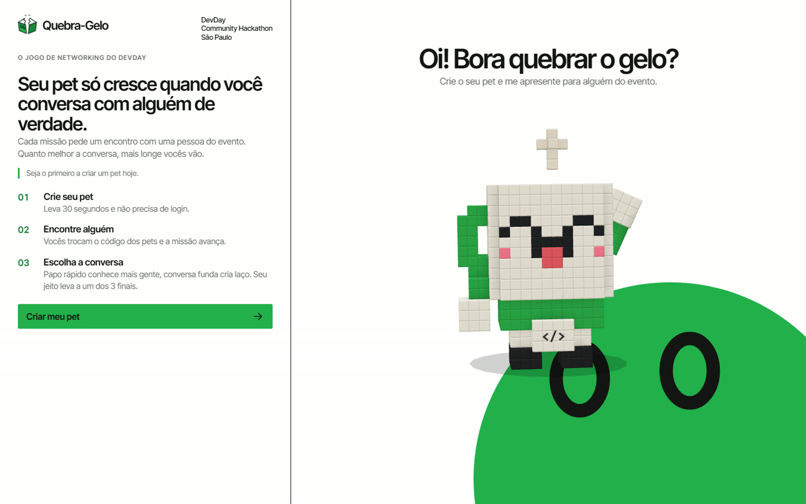
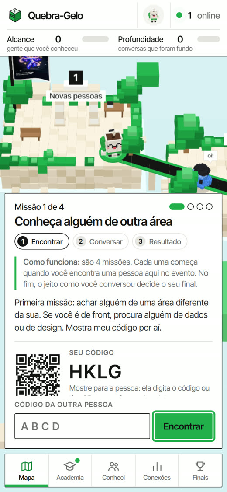
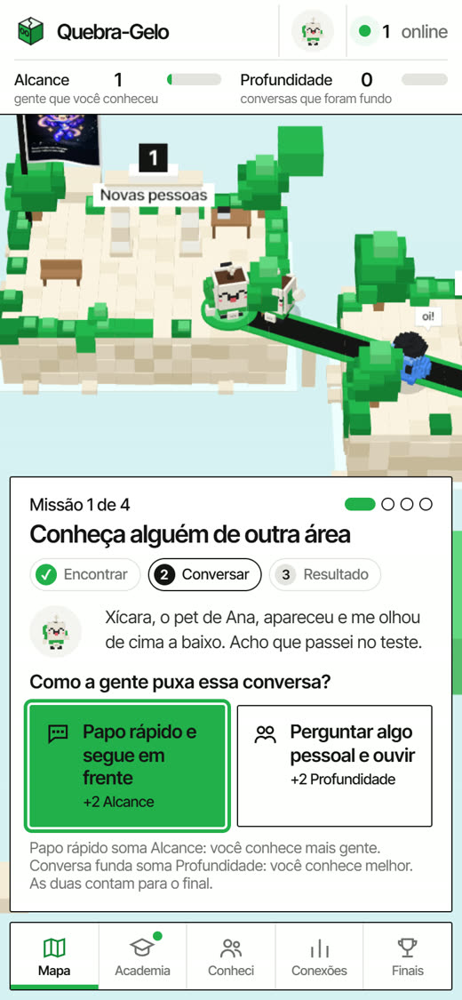
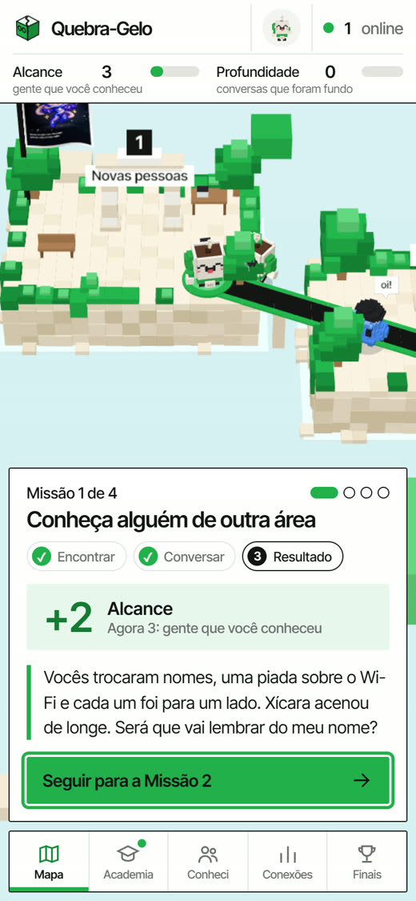
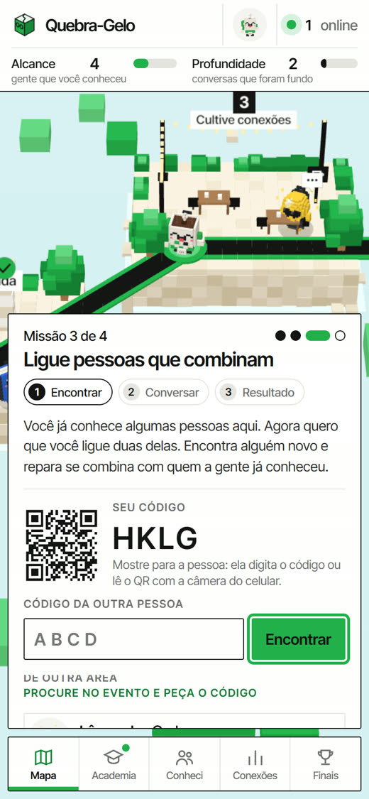
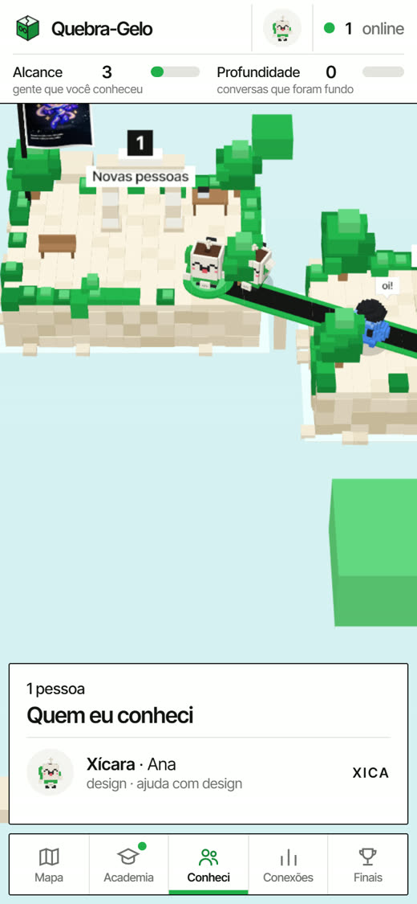
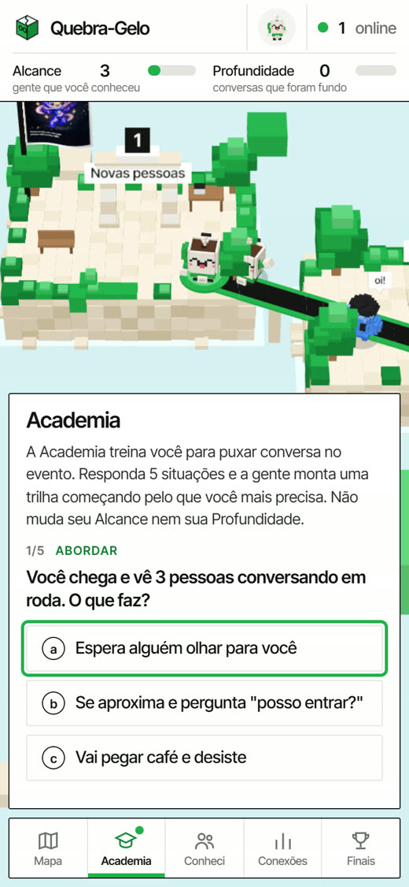

O networking do DevDay, jogável.
Cada um fica no próprio grupo. Puxar conversa com quem você não conhece trava, ainda mais para quem é tímido ou está chegando na área.
Em 30 segundos você cria um pet de voxel e diz sua área, com o que quer ajuda e com o que pode ajudar. O jogo usa isso para sugerir com quem conversar.




Conhecer mais gente. Um oi, uma troca rápida, o próximo encontro.
Ficar, perguntar algo pessoal e ouvir. Menos gente, mais conexão.
No fim você leva a lista de quem conheceu. O LinkedIn é opcional e só aparece para quem te encontrou.


Um diagnóstico de 5 perguntas monta uma trilha curta com atividades para quem trava na hora de conversar. Treina, depois vai para o evento.

quebra-gelo.julioakamine.com